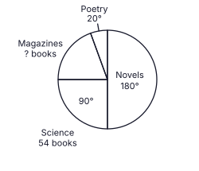
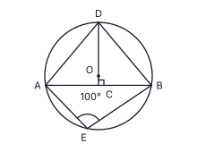
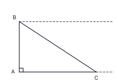
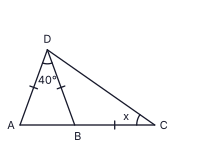
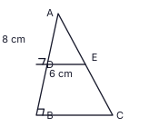

Part A
Answer all questions on this paper itself. Take π = 227. (2 × 25 = 50 marks)
In a factory, 8 workers can complete an order in 18 days. How many more workers, working at the same rate, must be employed to complete the order in 12 days?
In the figure, AB ∥ CD, AÊC = 125° and EĈD = 70°. Find the size of BÂE.

Simplify: 34x − 56x + 23x
Which one of the following cannot be a face of a right triangular prism? Write its number in the box.
(i) a square (ii) a rectangle whose adjacent sides are unequal (iii) a parallelogram which has no right angle
The pie chart shows how the books borrowed from a library on a certain day were divided among four categories. 54 Science books were borrowed. Find the number of Magazines borrowed.

In the figure, O is the centre of the circle and DOC is a straight line which meets the chord AB at its mid-point C. If AÊB = 100°, find the size of CD̂B.

Factorise: 4x2 − 36
Given that lg 3.58 = 0.5539, write down the value of lg 358.
In the figure, AB is a vertical chimney of a factory and AC is level ground. A bird is at B, the top of the chimney, and a rat is at C. On the figure mark the angle of elevation of B from C as a and the angle of depression of C from B as b, and write the relation between a and b.

A factory makes cylindrical tins. The height of a tin is 5 times its base radius r. Write, in its simplest form, the ratio of the area of paper needed to cover the curved surface of a tin to the area of paper needed to cover one circular base. (Curved surface area of a cylinder = 2πrh)
Two fair tetrahedral dice have faces numbered 1, 2, 4, 5. Both dice are rolled together and the numbers on their bottom faces are added. Find the probability that the sum is 6.
In the figure, ABC is a straight line and AD = DB = BC. If AD̂B = 40°, find the value of x.

The universal set is ξ = {x : x is an integer, 1 ≤ x ≤ 12}. A = {multiples of 3} and B = {even numbers}, both taken from ξ. Write the number of the correct statement.
(i) A ∩ B = {6} (ii) n(A ∪ B) = 8 (iii) n(A) = 3
Simplify: (6x2y3 × 4x3y) ÷ 12xy2
In a geometric progression the second term is −2 and the third term is −6. Find the fifth term.
ABCD is a cyclic quadrilateral. BD bisects AD̂C, AB is produced to E and BÂC = 38°. Find the size of CB̂E.

Find the highest common factor of 8a3b2, 12a2b3 and 20a2b.
A solid metal prism with a triangular base of area 154 cm2 is melted and recast, without loss, into a solid cylinder of the same height and of base radius r cm. Find r. (Volume of a cylinder = πr2h)
In triangle ABC, D and E are the mid-points of AB and AC respectively. AD̂E = 90°, AD = 8 cm and DE = 6 cm. Find the perimeter of the quadrilateral BCED.

Find the equation of the straight line passing through the points (2, 1) and (5, 7).
In the figure, O is the centre of the circle and AOBF is a straight line. ABCD is a parallelogram and E is the point where AD meets the circle. If BĈD = 70°, find the size of EB̂F.

Pradeep invested a sum of money for 2 years at an annual compound interest rate of 8%. The interest he earned in the second year was Rs. 2 160. Find the amount he invested.
In the figure, C is the centre of the circle and AC ∥ BD. If CB̂D = 50°, find the size of AÊB.

Solve the inequality 2x + 9 > 1 and write the negative integers which satisfy it.
AB and AC are two tangents drawn from A to a circle, and AB touches the circle at B. Some of the construction lines needed to find the centre O of the circle are shown. Using them, complete the construction and mark the centre O. (The construction lines must be clearly visible.)